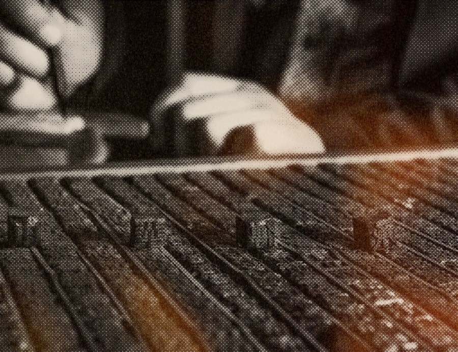
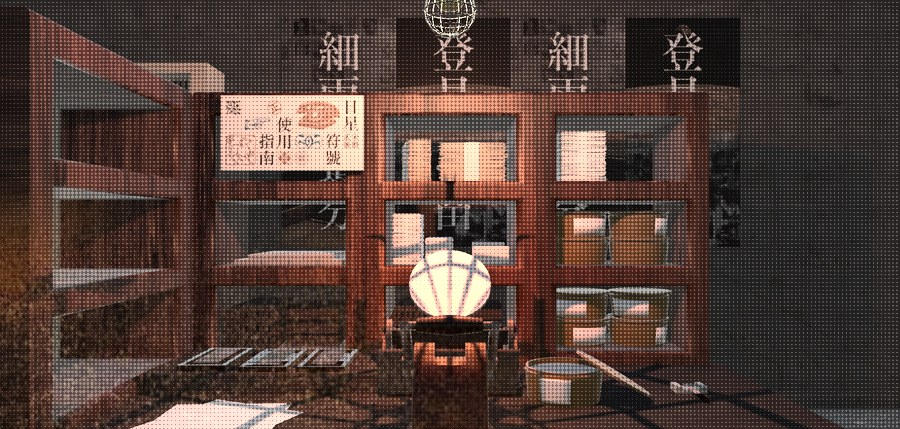
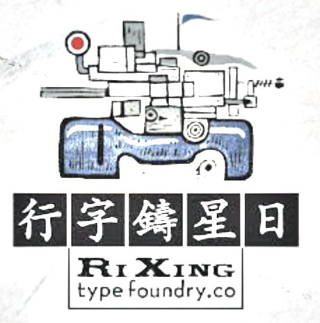

鉛年
鉛年／嵌年／千年
向下滑動
故事浸漬在鉛字的縫隙之間，
時代的溫度與存在的痕跡都將緩緩沉入其中，
伴隨鑄造、排列、上千次的壓印，
縈游於我們指尖的書頁中，
與紛紛洋洋而來的氣泡擦身而過，
墜落向更遙遠的未來。
活字印刷四大流程
關於鉛年

我們的主題“鉛年”是以貫穿著活字版印刷的三個“鉛/嵌/千”所構成。
以鉛鑄形，以嵌聚成，以千萬字，跨千萬年。
以鉛嵌千字，鑄鉛嵌千年。
模組化與活字印刷
模組化，模板與組裝，一種相當現代的概念，甚至可以說，這是造就現代社會的奇點。
而在探索這個主題的過程中，我們開始思考一個問題，「模組化」到底從何而來？
因此，我們不斷往回探索，試著找到模組化的起點。
當然，這樣的起點可能並不存在，大量生產與組合的概念並不稀有，你甚至可以說麵粉和麵包也是模組化的其中之一。
然而我認為，活字版印刷，這項文明上的轉折點，可以說是人類在歷史中，首次「有意識的」應用模組化的概念，也是它能流傳千年的原因。

日星鑄字行
日星鑄字行是台灣唯一僅存且持續營運的鑄字行，保留了全世界唯一的「正體中文活版印刷」工藝與鉛字產房。創辦於 1969 年，隱身在台北車站與大稻埕之間的巷弄內，店內收藏有超過十萬字的珍貴銅模與鉛字。
實地訪談與歷程
製作團隊
美術組
彭璿安
劉冠廷
鄧燕婷
柯蓉云
程式組
周嗣宸
周誠亮